 
  
Soy Frontend Developer especializado en interfaz y experiencia de usuario y programación web a nivel del cliente. Soy usuario áctivo de varias plataformas de aprendizaje ya que no creo en la educación tradicional por lo que decidí dejar la universidad a punto de terminar una Ingeniería en Electromecánica, soy parte del programa de expertos en productos de Google y fanático del diseño, la tecnología, la programación, la lectura, el aprendizaje empírico, me encanta viajar lo que me ha llevado a conocer hasta el momento más de 6 países como España, Francia, Suiza, Italia, Estados Unidos, etc. Hablo español nativamente, inglés fluido y francés.
Áctualmente soy líder de Frontend en DDB Group, Products Expert y Trusted Tester en Google, socio fundador y gerente de tecnología CTO en Genco Energía y Blackome Digital.
Si deseas contactarme envíame un mail a me@carlossz.co.